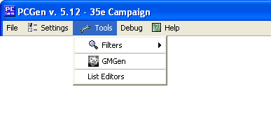

The Lst Converter is meant to aid anyone who creates their own custom list files. Its main purpose to keep custom LST files created in previous versions current by updating them to the current code. Its functions are limited and will not fix bugs or convert really old files to the current version. You cannot, for example, convert files from PCGen 2.x to the current version nor can you use it to adjust for different gameModes. The best method for using the LST converter on files from version older then one prior version is to run the LST Converter in each version on the dataset successively until you reach the current version.
To run the LST Converter on a dataset choose LST Converter from the Tools menu and then select the directory in which the dataset resides. You will be presented with a window listing the files and tags to be updated. You may choose which files and tags you wish to convert and then run the converter.